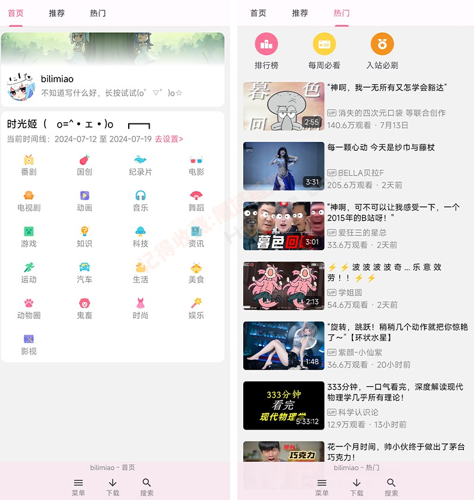

哔哩喵这两年：从追番工具到时光机，它在迭代里暴露了什么
从 v2.3 到 v2.4 的版本演进里，哔哩喵不只是加了几个功能按钮，它的迭代节奏悄悄讲清楚了团队真正关心什么——个性化、沉浸感，还有那些 B 站官方客户端做不到的事。
现在这版长什么样
手头这台手机里装的是 v2.4.8.1，距离我第一次从bilimiao官网找到它已经过去快两年了。坦白说，如果你只是打开首页刷推荐，界面和两年前差别并不大——还是那个熟悉的卡片流，还是那个顶部的时光机入口。但只要你往深处点几步，就会发现它已经不是当初那个"能看 B 站的第三方客户端"了。

最直观的变化在播放器。全屏状态下，进度条默认是隐藏的，画面干净到几乎只剩视频本身。这个细节在 v2.3.1 才加上——之前不管你愿不愿意，进度条总是压在画面底部，像个赶不走的路人。现在你可以在播放器设置里单独关掉它，去bilimiao文档翻一下就能找到这个选项，配合滑动手势控时间、长按倍速、上下滑调亮度，整个过程手不用离开屏幕，眼睛不用离开画面。追番的时候这种差别尤其明显，连续两三集看下来，你会意识到"哦原来 B 站官方客户端的 UI 一直挡着我"。
另一个明显的变化是时光机。这东西刚出来的时候只有一个模糊的概念，现在点开它，你可以在三种模式之间切换：默认的时间线模式看最近七天，月份模式拉回到任意月份，还有自定义范围让你精确到某一天。我上周用它回看了五一假期的热门视频，三天之内的内容按播放量排得整整齐齐——这在官方客户端里要自己翻日期、切分区、调排序，至少点五六下。

它从哪起步
样本文档里没提最早的版本号，只说"完整客户端时代"从 v2 大版本开始。但你能从功能痕迹里反推它的起步阶段：最初的版本形态只有常规版，分发渠道是网盘和 GitHub Release，体积三十兆上下，定位就是"给不想用官方客户端的人一个替代品"。
第一个关键转折点大概是时光机功能的引入。在那之前，第三方 B 站客户端能做的事，官方基本都能做——最多是换个皮肤、去个广告。时光机不一样，它是一个官方客户端根本没动力做的东西：按时间维度聚合热门，让你从"我不知道看什么"的被动消费变成"我想知道某段时间大家在看什么"的主动探索。这个功能的设计意图很明确——它不是在复制官方，而是在官方做不到的地方开辟战场。
第二个转折点是多版本形态。到 v2.3 前后，团队开始同时维护三个版本：常规版从官方下载、夸克网盘和 GitHub 都能拿到，F-Droid FOSS 版专门剔除闭源依赖给隐私敏感用户，甚至还做了 Android Wear 的手表版。一个面向大众的客户端，专门给开源社区做干净版本，这在同类产品里不多见。大多数第三方客户端要么只做一个版本、要么干脆闭源，哔哩喵选择了另一条路——功能最全的常规版兜底，纯开源版满足另一群人，手表版则明显是个练手的小项目。
进度条设置是第三个转折点，虽然是个小功能，但它暴露了团队的产品哲学：每个 UI 元素都值得让用户自己决定留不留。v2.3.1 加这个设置的时候，我第一反应是"这也值得单独一个版本号？"但用了一周之后发现，这恰恰是哔哩喵和官方客户端最大的区别——官方默认给你什么你就得受着，哔哩喵默认给你选择。
从迭代节奏看它在死磕什么
把这些功能按时间轴排开，一个清晰的优先级排序就出来了。
第一优先级：个性化。 屏蔽关键词功能在 v2.3 中期加进来，配合之前的分区订阅、播放偏好，整个产品在"让信息流变成你想看的样子"这件事上花的精力远多于"加更多内容源"。屏蔽关键词本身不复杂——就是对视频标题做字符串包含匹配，不支持正则、不匹配正文——但它解决的是真痛点：首页推荐里永远有你不感兴趣的游戏区、带货视频、营销号标题，官方客户端给你的"不感兴趣"按钮太温和，哔哩喵直接给你一个黑名单。
第二优先级：沉浸感。 播放器的每一次迭代都在往这个方向走：隐藏进度条、滑动手势、全屏优化、横屏适配。甚至版本形态里专门提了"平板/大屏设备横屏已优化"——这在同类产品里也是少见的，大多数第三方客户端只保证手机能用就完事了。
第三优先级：多平台适配。 F-Droid 版和手表版是这个方向的具体动作，但从更新节奏看，这块的优先级明显低于前两项。手表版更新慢、功能砍得只剩浏览和播放，F-Droid 版会滞后两三个版本——能做，但不优先。
什么一直没做？ 社区功能。没有评论区、没有弹幕收藏、没有关注动态——它从第一天起就是一个纯消费工具，不想做社交。对比官方客户端越来越重的社区属性，哔哩喵一直在刻意保持轻量。这条路走得对不对我不好说，但从迭代节奏看，这是一个有意识的选择，不是做不到。
照这个路线，下一步大概率会走向哪
说预判之前先声明：这是从迭代规律推的，不是官方消息。
首先，时光机肯定还会进化。现在的三种模式已经覆盖了时间维度，但聚合维度还停留在"按热门排序"——下一步大概率会加"按分区聚合"或者"按关注 UP 主聚合"的时光机。毕竟"看某段时间 B 站热门"和"看某段时间我关注的人发了什么"是两个完全不同的需求，后者的使用频率只会更高。
其次，播放器的手势控制会继续细化。现在已经有了滑动控时间、长按倍速、上下滑调亮度，下一步可能会加双击快退、长按静音这类高频手势，或者允许用户自定义手势对应什么功能——毕竟"让用户自己决定"这条产品哲学，还有很大的发挥空间。
最后，多版本形态里 F-Droid 版的更新节奏可能会加快。隐私敏感用户群体在变大，而哔哩喵已经证明了它有能力维护一个干净版本——如果 F-Droid 仓库的下载量持续增长，团队不太可能让它继续滞后两三个版本。手表版就不好说了，Android Wear 的生态一直半死不活，单独维护一个版本的 ROI 很低，随时可能被砍或者无限期停更。
这款客户端完整的版本记录和使用文档在三个仓库都能找到——GitHub上有源码和 Release 包，Gitee和GitCode为国内网络受限的用户留了备份地址，分发渠道覆盖了常规 Android 用户、隐私敏感用户和 F-Droid 社区，方便不同偏好的人各取所需。